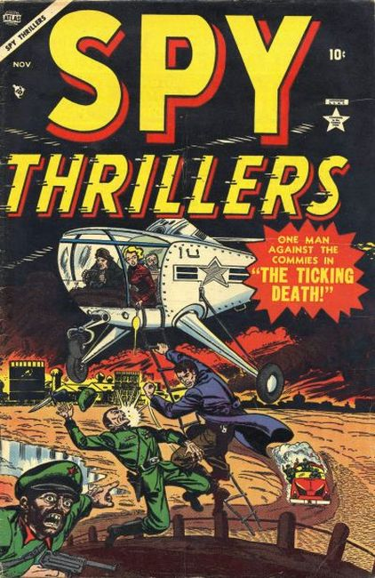

Series: 4 issues 1954
Cover by Sol Brodsky
Publisher: Atlas
Soy anthology series.
Rick Davis of the Secret Service in "The Double Identities," "The Purple Pyramid," and "The Ticking Death" (art on all three by Joe Sinnott). Back-up story, "The Eyes of Death!"